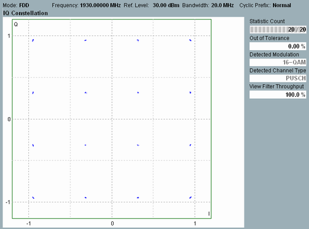

The constellation diagram shows the modulation symbols in the measured slot of the measured component carrier as points in the I/Q plane.

The constellation diagrams depend on the modulation type. For an ideal signal, the QPSK constellation diagram consists of four points, on a circle around the origin, with relative phase angles of 90 deg. The 16-QAM and 64-QAM modulation schemes produce rectangular patterns with 16 and 64 points, respectively; see example above.
If channel type PUCCH is detected, the constellation diagram shows the SC-FDMA symbols in the frequency domain.
Constellation diagrams give a graphical representation of the signal quality and can help to reveal typical modulation errors causing signal distortions.
See also: "I/Q Constellation Diagram"
- The I/Q amplitudes correspond to the values that the R&S CMW uses for the EVM calculation: A possible I/Q origin offset is already subtracted out.
- Due to the properties of the UL LTE signal, a pure I/Q imbalance causes circular constellation points.
For the parameters on the right, see "Common View Elements".
For query of the diagram contents, see "I/Q Constellation Results".